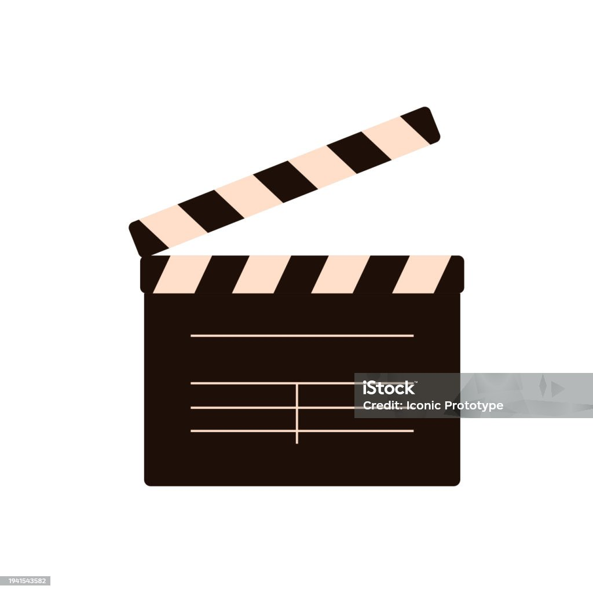
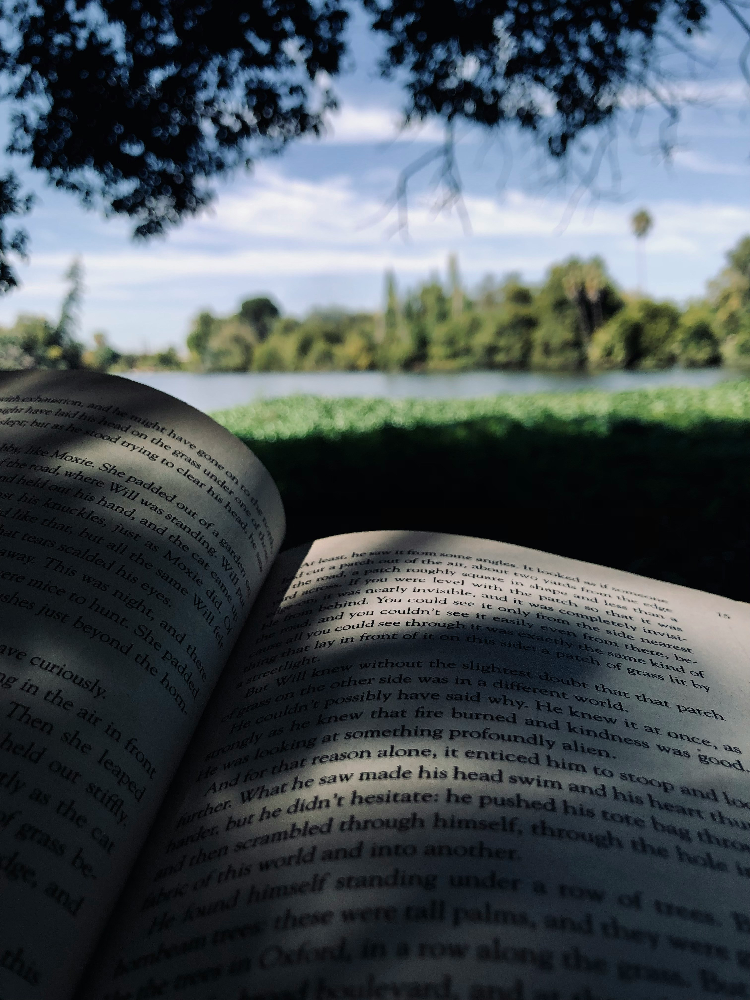

Hobby-uri
Hobby-urile mele
Îmi place să îmi petrec timpul liber făcând lucruri care mă relaxează și mă inspiră.

Vizionarea de filme
Prefer filmele de acțiune, documentarele, comediile și horror. Sunt genurile care mă atrag cel mai mult.

Lectura
Îmi plac cărțile de dezvoltare personală, educație financiară și istorie. Mă relaxează și mereu învăț ceva nou.

Călătoriile
Îmi place să descopăr locuri noi, să cunosc oameni și culturi diferite. Călătoriile îmi oferă energie și inspirație.